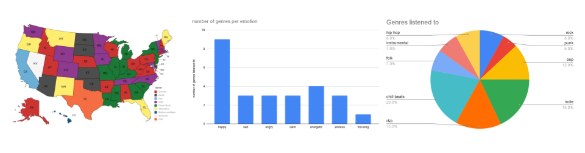

Music and Me
Overview
HiTrails is a rebranding and redesign of the app, Hiking Project.
The goal of this redesign was to make it more inspiring for users and simpler for users to record a trail.
Creating the Data
In the app, Hiking Project, users can find hikes near them, record their own trails, and upload prerecorded trails
for other users to see. Hiking Project is meant to be an app where users can form communities and share their hiking experiences
with each other, while motivating users to reach thier hiking goals. However, the current design and flow of the app doesn't
reflect that.

The Process
Hiking Project's current design is cold, repetitive and frustrating. After some research, I found that the problem
with the app was that there is no home page, there's no way to interact with your trail while you're recording it, and there are
way too many overwhelming questions at the end of your recorded hike.
See Google Slides for full research.
The solutions to these problems are to design the app to be more welcoming and interactive, and add an option to skip the details that some users might not care about.
To make Hiking Project more user friendly, I rebranded the whole app. I incorporated bright inspiring colors,
and interesting icons. I changed the old corporate font to Comfortaa. I also created illustrations for some of the
backgrounds.
Some of the biggest UX solutions were added to the homepage, map, and saved hikes page.
The purpose of the homepage is to consolidate information and give users an idea of what they can
expect on the app.
For the map page, I added more ways to interact with trails. This
would allow users to share more information about their hikes. The Saved page now gives users the chance to add
information and ratings about their trail at any time.
Click here to interact with XD file.